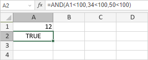
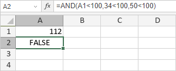

AND funkcija
Funkcija AND je jedna od logičkih funkcija. Koristi se za proveru da li je logička vrednost koju unesete TRUE ili FALSE. Funkcija vraća TRUE ako su svi argumenti TRUE.
Sintaksa
AND(logical1, [logical2], ...)
Funkcija AND ima sledeće argumente:
| Argument | Opis |
|---|---|
| logical1/2/n | Uslov za koji želite da proverite da li je TRUE ili FALSE |
Napomene
Kako primeniti funkciju AND.
Funkcija vraća FALSE ako je bar jedan od argumenata FALSE.
Primeri
Postoje tri argumenta: logical1 = A1<100, logical2 = 34<100, logical3 = 50<100, gde je A1 12. Svi ovi logički izrazi su TRUE. Zato funkcija vraća TRUE.

Ako promenimo vrednost A1 sa 12 na 112, funkcija vraća FALSE:
